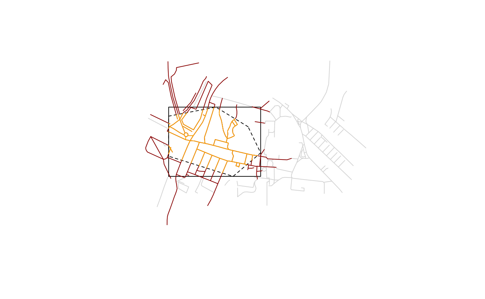

This function is used to find, download, translate and read OSM extracts
obtained from several providers. It is a wrapper around oe_match() and
oe_read(). Check the introductory vignette, the examples and the help pages
of the wrapped functions to understand the details behind all parameters.
oe_get(
place,
layer = "lines",
...,
provider = "geofabrik",
match_by = "name",
max_string_dist = 1,
level = NULL,
download_directory = oe_download_directory(),
force_download = FALSE,
max_file_size = 5e+08,
vectortranslate_options = NULL,
osmconf_ini = NULL,
extra_tags = NULL,
force_vectortranslate = FALSE,
boundary = NULL,
boundary_type = c("spat", "clipsrc"),
download_only = FALSE,
skip_vectortranslate = FALSE,
never_skip_vectortranslate = FALSE,
quiet = FALSE
)Description of the geographical area that should be matched with
a .osm.pbf file. Can be either a length-1 character vector, an
sf/sfc/bbox object, or a numeric vector of coordinates with length 2.
In the last case, it is assumed that the EPSG code is 4326 specified as
c(LON, LAT), while you can use any CRS with sf/sfc/bbox objects. See
Details and Examples in oe_match().
Which layer should be read in? Typically points, lines
(the default), multilinestrings, multipolygons or other_relations. If
you specify an ad-hoc query using the argument query (see introductory
vignette and examples), then oe_get() and oe_read() will read the layer
specified in the query and ignore layer. See also
#122.
(Named) arguments that will be passed to sf::st_read(), like
query, wkt_filter or stringsAsFactors. Check the introductory
vignette to understand how to create your own (SQL-like) queries.
Which provider should be used to download the data? Available
providers can be found with the following command: oe_providers(). For
oe_get() and oe_match(), if place is equal to ITS Leeds, then
provider is set equal to test. This is just for simple examples and
internal tests.
Which column of the provider's database should be used for
matching the input place with a .osm.pbf file? The default is "name".
Check Details and Examples in oe_match() to understand how this parameter
works. Ignored if place is not a character vector since the matching is
performed through a spatial operation.
Numerical value greater or equal than 0. What is the
maximum distance in fuzzy matching (i.e. Approximate String Distance, see
adist()) between input place and match_by column to tolerate before
testing alternative providers or looking for geographical matching with
Nominatim API? This parameter is set equal to 0 if match_by is equal to
iso3166_1_alpha2 or iso3166_2. Check Details and Examples in
oe_match() to understand why this parameter is important. Ignored if
place is not a character vector since the matching is performed through a
spatial operation.
An integer representing the desired hierarchical level in case
of spatial matching. For the geofabrik provider, for example, 1
corresponds with continent-level datasets, 2 for countries, 3
corresponds to regions and 4 to subregions. Hence, we could approximately
say that smaller administrative units correspond to bigger levels. If
NULL, the default, the oe_* functions will select the highest available
level. See Details and Examples in oe_match().
Where to download the file containing the OSM data?
By default this is equal to oe_download_directory(), which is equal to
tempdir() and it changes each time you restart R. You can set a
persistent download_directory by adding the following to your .Renviron
file (e.g. with edit_r_environ function in usethis package):
OSMEXT_DOWNLOAD_DIRECTORY=/path/to/osm/data.
Should the .osm.pbf file be updated if it has already
been downloaded? FALSE by default. This parameter is used to update old
.osm.pbf files.
The maximum file size to download without asking in
interactive mode. Default: 5e+8, half a gigabyte.
Options passed to the sf::gdal_utils()
argument options. Set by default. Check details in the introductory
vignette and the help page of oe_vectortranslate().
The configuration file. See documentation at
gdal.org. Check details in the
introductory vignette and the help page of oe_vectortranslate(). Set by
default.
Which additional columns, corresponding to OSM tags, should
be in the resulting dataset? NULL by default. Check the introductory
vignette and the help pages of oe_vectortranslate() and oe_get_keys().
Ignored when osmconf_ini is not NULL.
Boolean. Force the original .pbf file to be
translated into a .gpkg file, even if a .gpkg with the same name
already exists? FALSE by default. If tags in extra_tags match data in
previously translated .gpkg files no translation occurs (see
#173 for details).
Check the introductory vignette and the help page of
oe_vectortranslate().
An sf/sfc/bbox object that will be used to create a
spatial filter during the vectortranslate operations. The type of filter
can be chosen using the argument boundary_type.
A character vector of length 1 specifying the type of
spatial filter. The spat filter selects only those features that
intersect a given area, while clipsrc also clips the geometries. Check
the examples and also here for
more details.
Boolean. If TRUE, then the function only returns the
path where the matched file is stored, instead of reading it. FALSE by
default.
Boolean. If TRUE, then the function skips all
vectortranslate operations and it reads (or simply returns the path) of the
.osm.pbf file. FALSE by default.
Boolean. This is used in case the user
passed its own .ini file or vectortranslate options (since, in those
case, it's too difficult to determine if an existing .gpkg file was
generated following the same options.)
Boolean. If FALSE, the function prints informative messages.
Starting from sf version
0.9.6,
if quiet is equal to FALSE, then vectortranslate operations will
display a progress bar.
An sf object.
The algorithm that we use for importing an OSM extract data into R
is divided into 4 steps: 1) match the input place with the url of a
.pbf file; 2) download the .pbf file; 3) convert it into .gpkg format
and 4) read-in the .gpkg file. The function oe_match() is used to
perform the first operation and the function oe_read() (which is a
wrapper around oe_download(), oe_vectortranslate() and sf::st_read())
performs the other three operations.
# Copy ITS file to tempdir so that the examples do not require internet
# connection. You can skip the next 4 lines when running the examples
# locally.
its_pbf = file.path(tempdir(), "test_its-example.osm.pbf")
file.copy(
from = system.file("its-example.osm.pbf", package = "osmextract"),
to = its_pbf,
overwrite = TRUE
)
#> [1] TRUE
# Match, download (not really) and convert OSM extracts associated to a simple test.
its = oe_get("ITS Leeds", download_directory = tempdir())
#> The input place was matched with: ITS Leeds
#> The chosen file was already detected in the download directory. Skip downloading.
#> Start with the vectortranslate operations on the input file!
#> 0...10...20...30...40...50...60...70...80...90...100 - done.
#> Finished the vectortranslate operations on the input file!
#> Reading layer `lines' from data source `/tmp/RtmpkkTk4A/test_its-example.gpkg' using driver `GPKG'
#> Simple feature collection with 189 features and 9 fields
#> Geometry type: LINESTRING
#> Dimension: XY
#> Bounding box: xmin: -1.562458 ymin: 53.80471 xmax: -1.548076 ymax: 53.81105
#> Geodetic CRS: WGS 84
class(its)
#> [1] "sf" "data.frame"
unique(sf::st_geometry_type(its))
#> [1] LINESTRING
#> 18 Levels: GEOMETRY POINT LINESTRING POLYGON MULTIPOINT ... TRIANGLE
# Get another layer from ITS Leeds extract
its_points = oe_get("ITS Leeds", layer = "points", download_directory = tempdir())
#> The input place was matched with: ITS Leeds
#> The chosen file was already detected in the download directory. Skip downloading.
#> Adding a new layer to the .gpkg file
#> Start with the vectortranslate operations on the input file!
#> 0...10...20...30...40...50...60...70...80...90...100 - done.
#> Finished the vectortranslate operations on the input file!
#> Reading layer `points' from data source `/tmp/RtmpkkTk4A/test_its-example.gpkg' using driver `GPKG'
#> Simple feature collection with 186 features and 10 fields
#> Geometry type: POINT
#> Dimension: XY
#> Bounding box: xmin: -1.568766 ymin: 53.80569 xmax: -1.549451 ymax: 53.81136
#> Geodetic CRS: WGS 84
unique(sf::st_geometry_type(its_points))
#> [1] POINT
#> 18 Levels: GEOMETRY POINT LINESTRING POLYGON MULTIPOINT ... TRIANGLE
# Get the .osm.pbf and .gpkg files paths
oe_get(
"ITS Leeds", download_only = TRUE, quiet = TRUE,
download_directory = tempdir()
)
#> [1] "/tmp/RtmpkkTk4A/test_its-example.gpkg"
oe_get(
"ITS Leeds", download_only = TRUE, skip_vectortranslate = TRUE,
quiet = TRUE, download_directory = tempdir()
)
#> [1] "/tmp/RtmpkkTk4A/test_its-example.osm.pbf"
# See also ?oe_find()
# Add additional tags
its_with_oneway = oe_get(
"ITS Leeds", extra_tags = "oneway",
download_directory = tempdir()
)
#> The input place was matched with: ITS Leeds
#> The chosen file was already detected in the download directory. Skip downloading.
#> Start with the vectortranslate operations on the input file!
#> 0...10...20...30...40...50...60...70...80...90...100 - done.
#> Finished the vectortranslate operations on the input file!
#> Reading layer `lines' from data source `/tmp/RtmpkkTk4A/test_its-example.gpkg' using driver `GPKG'
#> Simple feature collection with 189 features and 10 fields
#> Geometry type: LINESTRING
#> Dimension: XY
#> Bounding box: xmin: -1.562458 ymin: 53.80471 xmax: -1.548076 ymax: 53.81105
#> Geodetic CRS: WGS 84
names(its_with_oneway)
#> [1] "osm_id" "name" "highway" "waterway" "aerialway"
#> [6] "barrier" "man_made" "oneway" "z_order" "other_tags"
#> [11] "geometry"
table(its_with_oneway$oneway, useNA = "ifany")
#>
#> yes <NA>
#> 13 176
# Use the query argument to get only oneway streets:
q = "SELECT * FROM 'lines' WHERE oneway == 'yes'"
its_oneway = oe_get("ITS Leeds", query = q, download_directory = tempdir())
#> The input place was matched with: ITS Leeds
#> The chosen file was already detected in the download directory. Skip downloading.
#> The corresponding gpkg file was already detected. Skip vectortranslate operations.
#> Reading query `SELECT * FROM 'lines' WHERE oneway == 'yes'' from data source `/tmp/RtmpkkTk4A/test_its-example.gpkg' using driver `GPKG'
#> Simple feature collection with 13 features and 10 fields
#> Geometry type: LINESTRING
#> Dimension: XY
#> Bounding box: xmin: -1.558828 ymin: 53.80595 xmax: -1.548899 ymax: 53.809
#> Geodetic CRS: WGS 84
its_oneway[, c(1, 3, 9)]
#> Simple feature collection with 13 features and 3 fields
#> Geometry type: LINESTRING
#> Dimension: XY
#> Bounding box: xmin: -1.558828 ymin: 53.80595 xmax: -1.548899 ymax: 53.809
#> Geodetic CRS: WGS 84
#> First 10 features:
#> osm_id highway z_order geometry
#> 1 6277600 service 0 LINESTRING (-1.552587 53.80...
#> 2 6277601 residential 3 LINESTRING (-1.551771 53.80...
#> 3 6295680 trunk 8 LINESTRING (-1.552894 53.80...
#> 4 31705836 trunk 8 LINESTRING (-1.552349 53.80...
#> 5 31705838 trunk_link 8 LINESTRING (-1.552261 53.80...
#> 6 38422788 trunk 8 LINESTRING (-1.552261 53.80...
#> 7 147151516 service 0 LINESTRING (-1.557987 53.80...
#> 8 151645336 residential 3 LINESTRING (-1.552181 53.80...
#> 9 160502811 service 0 LINESTRING (-1.553221 53.80...
#> 10 552695946 trunk_link 8 LINESTRING (-1.551952 53.80...
# Apply a spatial filter during the vectortranslate operations
its_poly = sf::st_sfc(
sf::st_polygon(
list(rbind(
c(-1.55577, 53.80850),
c(-1.55787, 53.80926),
c(-1.56096, 53.80891),
c(-1.56096, 53.80736),
c(-1.55675, 53.80658),
c(-1.55495, 53.80749),
c(-1.55577, 53.80850)
))
),
crs = 4326
)
its_spat = oe_get("ITS Leeds", boundary = its_poly, download_directory = tempdir())
#> The input place was matched with: ITS Leeds
#> The chosen file was already detected in the download directory. Skip downloading.
#> Start with the vectortranslate operations on the input file!
#> 0...10...20...30...40...50...60...70...80...90...100 - done.
#> Finished the vectortranslate operations on the input file!
#> Reading layer `lines' from data source `/tmp/RtmpkkTk4A/test_its-example.gpkg' using driver `GPKG'
#> Simple feature collection with 77 features and 9 fields
#> Geometry type: LINESTRING
#> Dimension: XY
#> Bounding box: xmin: -1.562458 ymin: 53.80471 xmax: -1.552941 ymax: 53.81102
#> Geodetic CRS: WGS 84
its_clipped = oe_get(
"ITS Leeds", boundary = its_poly, boundary_type = "clipsrc",
quiet = TRUE, download_directory = tempdir()
)
plot(sf::st_geometry(its), reset = FALSE, col = "lightgrey")
plot(sf::st_boundary(its_poly), col = "black", add = TRUE)
plot(sf::st_boundary(sf::st_as_sfc(sf::st_bbox(its_poly))), col = "black", add = TRUE)
plot(sf::st_geometry(its_spat), add = TRUE, col = "darkred")
plot(sf::st_geometry(its_clipped), add = TRUE, col = "orange")

# More complex examples
if (FALSE) {
west_yorkshire = oe_get("West Yorkshire")
# If you run it again, the function will not download the file
# or convert it again
west_yorkshire = oe_get("West Yorkshire")
# Match with place name
oe_get("Milan") # Warning: the .pbf file is 400MB
oe_get("Vatican City") # Check all providers
oe_get("Zurich") # Use Nominatim API for geolocating places
# Match with coordinates (any EPSG)
milan_duomo = sf::st_sfc(sf::st_point(c(1514924, 5034552)), crs = 3003)
oe_get(milan_duomo, quiet = FALSE) # Warning: the .pbf file is 400MB
# Match with numeric coordinates (EPSG = 4326)
oe_match(c(9.1916, 45.4650), quiet = FALSE)
# Check also alternative providers
baku = oe_get(place = "Baku")
# Other examples:
oe_get("RU", match_by = "iso3166_1_alpha2", quiet = FALSE)
# The following example mimics read_sf
oe_get("Andora", stringsAsFactors = FALSE, quiet = TRUE, as_tibble = TRUE)}
# Remove .pbf and .gpkg files in tempdir
oe_clean(tempdir())